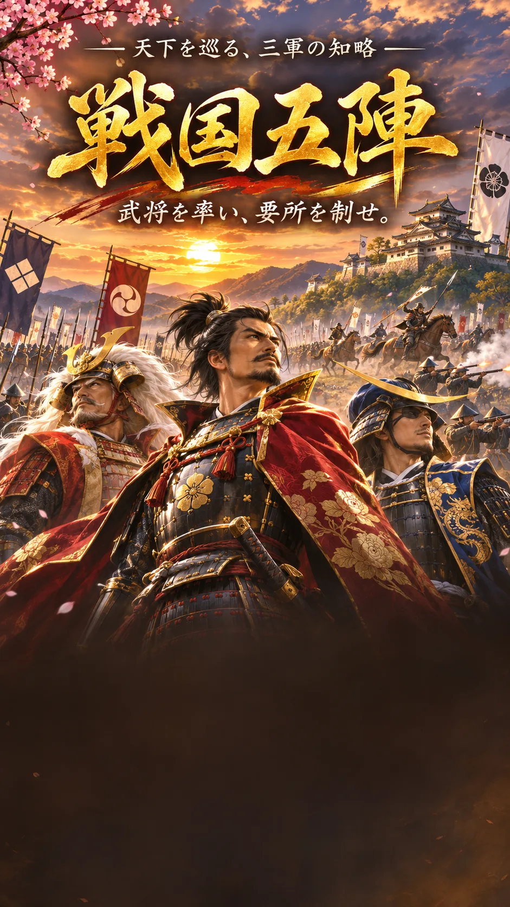

⚔️ 戦国五陣

戦国五陣
武将を率い、要所を制せ。
2台のスマホでオンライン対戦オンライン対戦
一人が対戦部屋を作り、もう一人が6桁の部屋番号で参加します。
📜 遊び方
🏆 勝利条件
- 相手の大将を撃破する
- 敵陣の退き口に進軍する
- 左・中央・右の3要所をすべて制圧する
いずれか一つを達成すると勝利です。要所3つの制圧は、その瞬間に勝敗が決まります。
⚔️ 対戦準備
- 一人が6桁の対戦部屋を作り、もう一人が参加する
- 左・中・右それぞれの武将を、7人から重複なしで選ぶ
- 基本部隊9枚と特殊部隊1枚の合計10枚を、3武将に自由に配属する（各武将に最低1枚）
- 大将を指定して双方「この編成で出陣」を押す
相手の武将名と配属部隊数は、初めて合戦（遠射を含む）が成立するまで非公開です。進軍しているだけでは公開されません。接敵後は武将名と残存部隊数を表示し、兵種の内訳は戦闘で使われるまで非公開とします。大将の印は相手に表示しません。
🔄 手番と進軍
先攻・後攻は試合ごとにランダム抽選。1ラウンドに両軍が交互に3回ずつ行動し、次ラウンドは先手が交代します。各武将が行動できるのは1ラウンドにつき1回です。
自分の武将をタップし、上下左右の隣の空きマスをタップすると進軍します。武将を選んで「その場で待機」もできます。敵武将のマスをタップすると合戦を仕掛けます。
🛡️ 合戦のしくみ
攻撃側が部隊を選び、次に防御側が部隊を選びます。戦闘力は兵種の基本値＋武将の対応Lv＋三すくみ＋地形補正＋能力補正で計算します。
🛡️ 槍 → 鉄砲に強い
💥 鉄砲 → 騎馬に強い
有利なら＋2、不利なら−2です。通常戦闘のダメージは勝者1・敗者2、引き分けなら双方1です。部隊のHPが0になると敗走。率いる部隊が全滅すると武将が撃破されます。
⚡ 挟撃B
攻撃する武将のほかに、敵の上下左右に隣接する味方武将がいると挟撃成立です。一直線の挟み込みだけでなく、L字型も対象です。原則として攻撃側は無傷で勝利し、防御側は2ダメージを受けます。
ただし本多忠勝は最初の挟撃を「蜻蛉切」で通常戦闘に戻し、以後の挟撃では被害を軽減します。
⛰️ 地形と特殊能力
地形には山地・森林・平野・参道・退き口・要所があります。兵種によって得意な地形が異なります。武将と特殊部隊の能力は「武将・部隊一覧」で確認できます。
🏹弓兵：遠射。🥷忍者：敵越え進軍。📜軍師：戦闘力＋1と包囲看破。⚔️精鋭隊：精鋭の一撃と挟撃被害軽減。
徳川家康の「堅陣」「三河武士の踏ん張り」も利用可能です。
※ほかの武将の一部必殺技はまだ未実装です。ゲーム内に表示される発動ボタンが実際に使用できる能力です。
🏯 武将・部隊一覧
出陣編成
左・中・右の武将を選び、10枚すべてを配属。基本部隊9枚＋特殊部隊1枚。各武将に最低1枚。部隊数は合戦まで相手に秘密です。
赤軍は下から、青軍は上から。左右の武将は山地スタート。黄色いマスの左（上から4行目）・中央・右（上から2行目）の3要所をすべて制圧すると即勝利。相手の武将名・部隊数は初めて合戦（遠射を含む）するまで秘密です。大将の印も相手には公開されません。自軍の武将を選んで隣のマスを押します。
行動と戦闘
戦況
合戦記録
対戦ルール：武将名と部隊数は接敵まで非公開。大将の印は相手に非公開。未実装の必殺技があります。現在はカジュアル対戦用で、Firebase内部の秘密データ分離は未対応です。